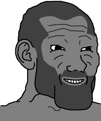
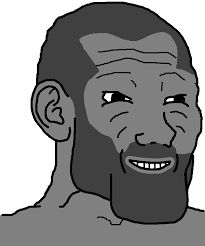
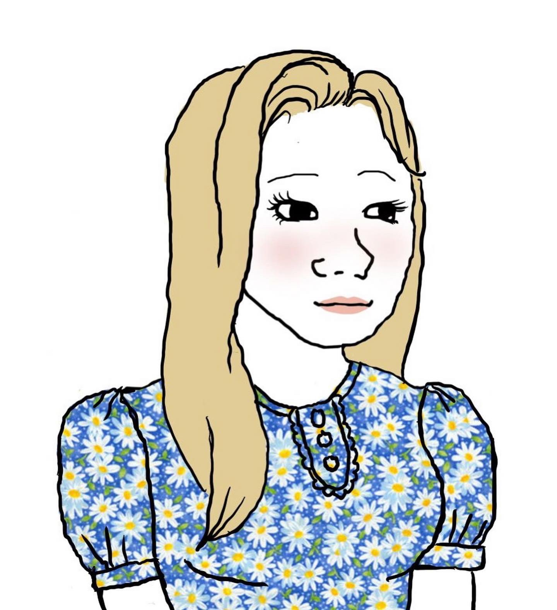
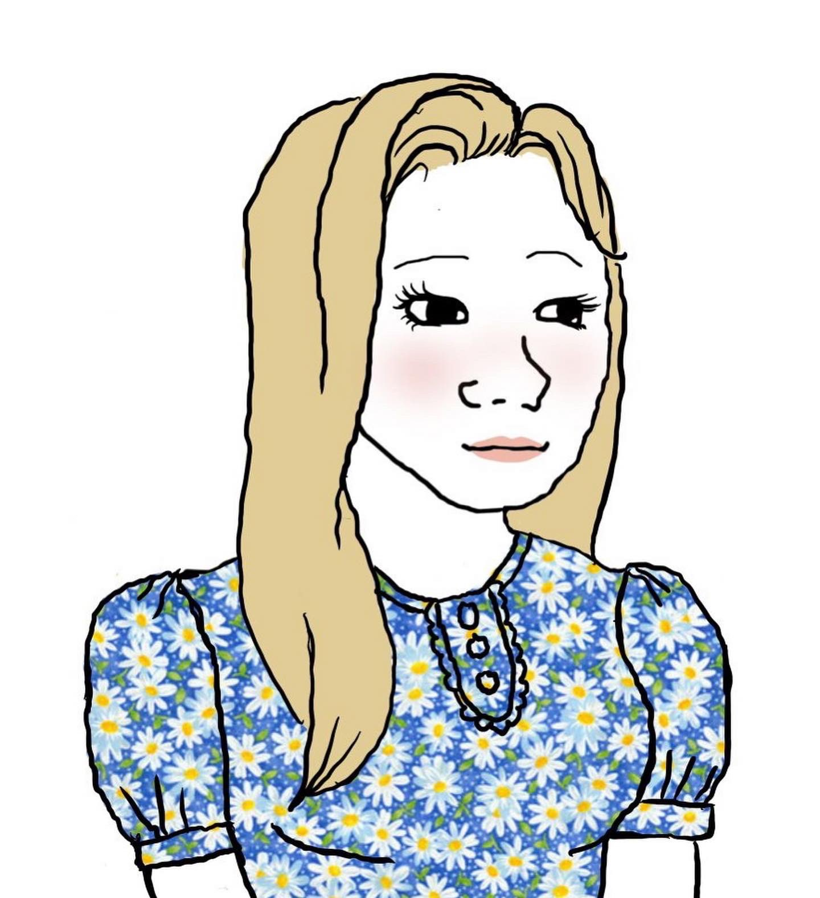

Classic Wojak
Emotional authenticity and empathy; the original "feels guy" navigating life's complexity.
- High empathy
- Introspective
- Values honesty
Which Internet Meme Character Are You?
Discover your digital personality archetype with our scientifically-designed quiz featuring 10 detailed Wojak character profiles and psychological insights into internet culture.
Wojak archetypes map internet-era identities to recognizable behavioral patterns. This assessment translates your choices into a best-fit profile across motivation, social energy, resilience, and worldview.
Your final match combines these pillars with cultural context to produce a nuanced, human-readable identity—not a stereotype.
Common Profiles Doomer
Doomer
 Bloomer
Chad
Bloomer
Chad
 Zoomer
Zoomer
 NPC
Tradwife
NPC
Tradwife
Decisive, status-oriented, and action-first. Scores high in confidence and social assertiveness.
DoomerIntrospective and world-weary; tends towards pessimism but values authenticity and depth.
BloomerOptimistic growth mindset; emphasizes self-improvement, health, and constructive routines.
NPCPreference for consensus, stability, and established norms; seeks clarity and structure.
Answer 10 questions to discover your internet personality archetype
Explore each archetype with quick traits and context. Use search or filter to find a character fast.
Emotional authenticity and empathy; the original "feels guy" navigating life's complexity.
Philosophical pessimist; sees through facades and wrestles with existential dread.
Optimistic self-improver; builds routines and momentum through discipline.
Confident and decisive; action-first leadership and high social assertiveness.
Struggles with instant gratification; highlights modern dopamine cycles.
Traditional values and stability; respects order and experience.
Digitally native and adaptive; learns fast and rides trends.
Conformity and stability; prefers clarity, structure, and norms.
Over-invests in romance; reminder to keep boundaries and self-respect.
Meme-native communicator; channels culture and humor into identity.
Family-centered and nurturing; values tradition and home life.
Existential, stylish, and humorous; embraces the absurd with wit.

Upbeat meme enthusiast; embraces trends with contagious excitement.
Everything you need to know about the Wojak Personality Quiz and internet meme archetypes.
Found out which Wojak you are? Share your personality archetype with friends and see if they agree with your results. Compare your archetypes and discover what your friend group's personality mix reveals!